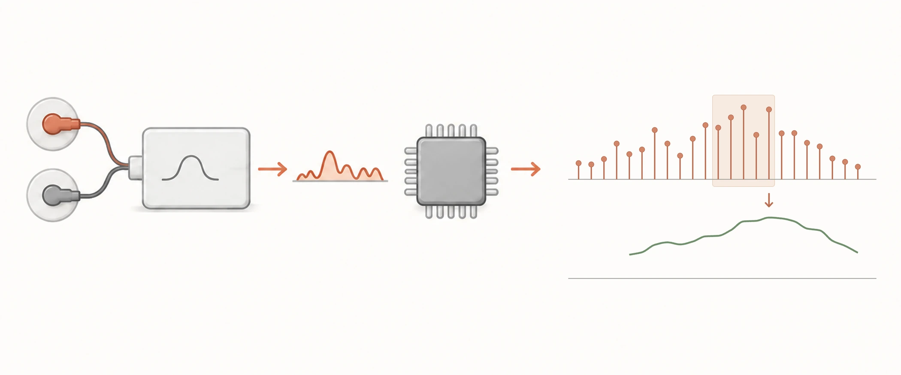

返回项目尿动力仪 EMG 采集链
信号处理概念图 · EMG 采集与滑动 RMS
尿动力仪 / EMG 采集链与软件处理
尿动力仪 EMG 采集链
与滑动 RMS 算法
实现滑动 RMS 活动包络，
完成采集链联调与测试。

研发任务
梳理电极、模拟前端、整流、ADC 与软件处理链，实现 EMG 活动包络计算和采集链联调。
承担工作
实现滑动 RMS 活动包络和可配置时间窗，修正 ADC 时钟及中断与主循环之间的共享状态访问，与硬件工程师完成采集链联调。
- 核对采集与整流接口确认 MCU 接收整流后的单极性信号。
- 分离显示与计算路径RMS 直接使用原始 ADC 样本，显示偏置在显示环节处理。
- 完成软硬件联调梳理采集链问题，配合硬件工程师实施采集与滤波改进。
EMG 采集与处理链
- 表面电极
- 带通 / 工频陷波
- 全波整流
- ADC
- 滑动 RMS 活动包络
MCU 接收整流后的单极性信号，RMS 使用原始 ADC 值计算。
完成采集链与 RMS 程序调试，
通过实际测试。
实现 50 / 100 / 200 ms 滑动窗口配置，完成主机侧测试、ARM GCC 构建与采集链实际测试。
EMG 通道处理ADC 输入、RMS 算法与采集修正
确认整流后的 ADC 输入
核对表面电极、带通 / 工频陷波、全波整流与 ADC 的关系，确认 MCU 接收整流后的单极性信号。
分离显示偏置与 RMS 计算
RMS 直接使用原始 ADC 采样值计算活动包络，显示偏置在显示环节处理。
实现可配置滑动 RMS
编写 50 / 100 / 200 ms 窗口设置，计算 EMG 活动包络。
修正时钟与共享状态
修正 ADC 时钟及中断和主循环之间的共享状态访问，配合硬件工程师完成采集与滤波改进，并进行构建和实际测试。
算法参数滑动 RMS 时间窗
50 ms 窗口：滑动 RMS 以最近 50 ms 的原始 ADC 样本计算活动包络。